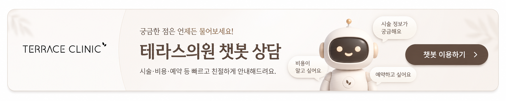

리팟레이저로 흑자 제거 효과없나요? 원인은 반복치료 때문입니다.
리팟레이저 흑자 제거 방법 상담 전 확인할 점
안녕하세요. 테라스의원 대표원장 권유정입니다. 흑자 제거를 위해 리팟레이저를 고려하시며, 효과에 대한 의문을 품고 계실 거라 생각합니다. 리팟레이저는 최근 흑자 제거에 대한 매우 강력한 치료 장비로 많은 분들이 찾고 있습니다. 하지만 많은 환자분들이 "리팟레이저 치료 후에도 흑자가 다시 생기면 어쩌나"라고 걱정하시는 모습을 봅니다. 이러한 의문이 생기는 이유는 여러 요소들 때문인데요, 오늘은 리팟레이저가 흑자 제거에 뛰어난 이유와 이를 사용하면서 주의해야 할 점들을 안내드리겠습니다.
리팟레이저란 무엇인가요?
리팟레이저는 멜라닌 색소에 선택적으로 작용하여 색소를 제거하는 데 도움을 주는 레이저 장비입니다. 이 장비는 주변 피부에는 최소한의 영향을 미치면서도 강력한 흑자 제거 효과를 자랑합니다.
흑자 제거의 원리
흑자는 진피층까지 침투하는 색소성 질환으로, 단순한 제거가 어려운 난치병입니다. 리팟레이저는 강력한 에너지를 사용해 피부 깊숙이 있는 멜라닌 세포를 효과적으로 파괴할 수 있습니다. 이 과정에서 전문 의료진의 판단이 굉장히 중요합니다.
반복 치료가 필요한 이유
리팟레이저의 효과는 단 한 번의 치료가 아닌 여러 번의 반복적인 치료를 통해 극대화됩니다. 많은 환자분들이 치료 후 즉각적인 효과를 보고 걱정 없이 치료를 종료하시는 경우가 있지만, 이는 다시 흑자가 생길 가능성을 높입니다. 따라서 치료 후에도 지속적인 관리가 필요합니다.
의료진의 역할
흑자 제거에서 실질적으로 어떤 의료진을 선택하느냐는 정말 중요합니다. 저희 테라스의원에서는 환자 개개인에 맞춘 치료 계획을 세우고, 전문적인 진단을 통해 적절한 치료를 지속적으로 진행합니다. 치료 고려를 하시는 분들께서는 꼭 한 번 방문해 보시고, 개인 맞춤 상담을 받아보세요. 여러분에게 도움이 되길 바랍니다! 😊
